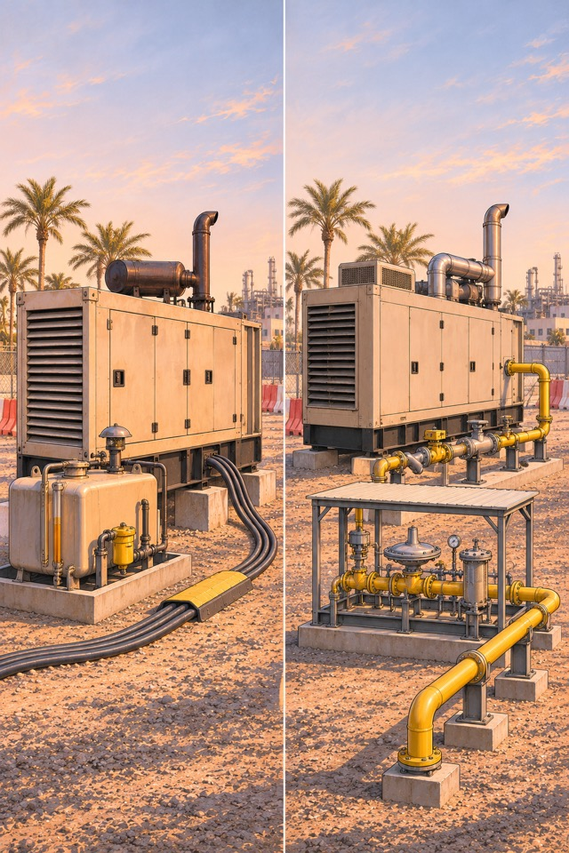
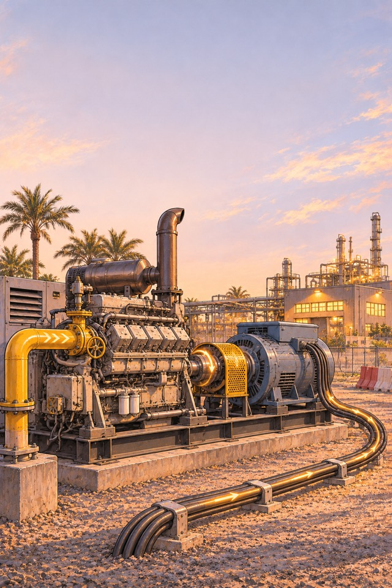
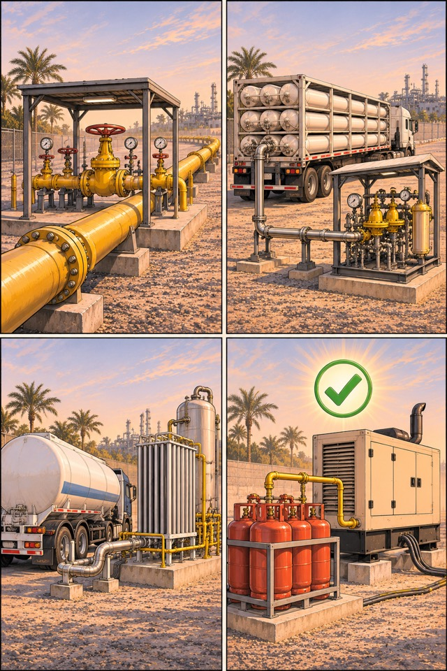
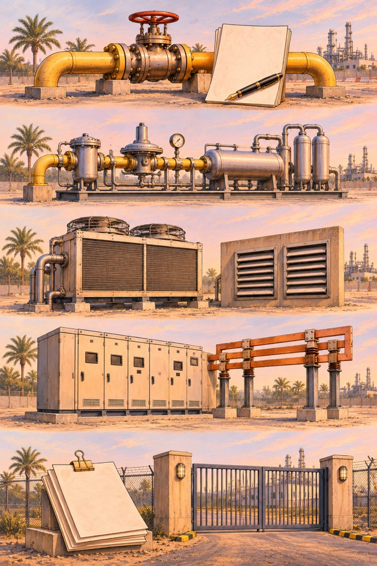
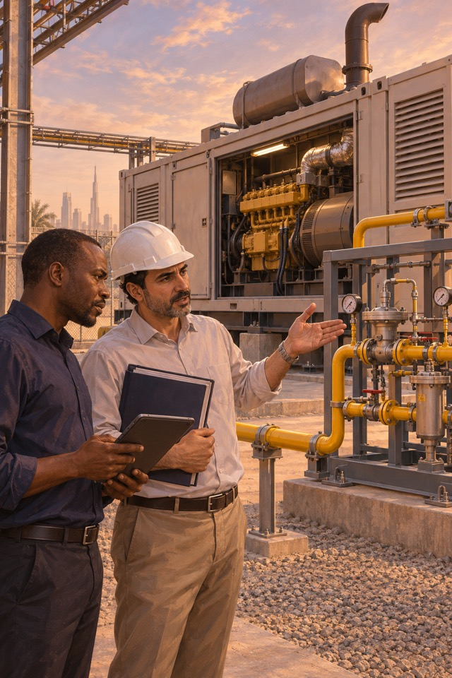
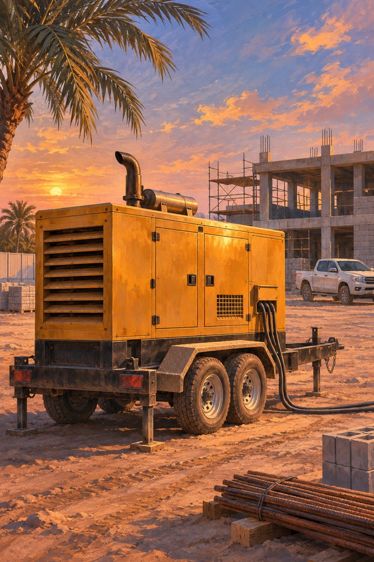

Can I Rent a Gas Generator for Six Months?
One question changes the comparison: price per delivered kWh. Check gas access, run hours and load profile before you ask suppliers.
01 · The question
Client: We run on diesel today. We want a gas genset for six months. What's the monthly rental?
K4 advisor: That's what everyone asks first. I can't answer it yet — and no honest supplier can either.

02 · A gas rental is a power-plant project
With diesel, you rent a machine.
With gas, you set up a small power plant.
Two things decide your price: where the gas comes from, and how many hours you really run.

03 · How a gas genset makes electricity
Gas → Engine → Alternator → Electricity
Same idea as your diesel unit. An engine turns an alternator.
The engine runs on gas instead of diesel. Everything that is different sits in the fuel system — and that is where the cost and the delays live.

04 · Where will the gas come from?
Four routes, four different projects:
- Pipeline — the cheapest where it exists. Rarely quick to arrange.
- CNG by truck — delivered by trailer; needs pressure reduction on site.
- LNG by truck — needs regasification on site. Priced against world markets, and those move.
- LPG — a different fuel. Only if your engine is approved for it by the manufacturer.
Same engine. Same site. Your fuel bill can differ several times over from this choice alone.

05 · What else has to work?
Before the first kilowatt-hour, a gas project needs:
- A gas supply with a contract behind it
- Gas train and pressure control
- Cooling and ventilation sized for your climate
- Switchgear, synchronisation and protection
- Permits: safety, gas handling — and the right to generate at all
None of this comes with the genset. All of it takes time.
In some places the law decides for you. In Dubai, third-party off-grid generation is not permitted as a general power supply; DEWA lists emergency back-up and exceptional cases with prior written approval. Rules differ by country — check your route before pricing equipment. Read DEWA's published conditions. This is general information, not legal advice.

06 · The rental rate sits in between
Everybody says: gas fuel is cheaper than diesel.
Usually true. And still not the answer.
Between cheap fuel and a cheap kilowatt-hour sits the rental rate.
A gas unit costs more to rent than a diesel one. A short rental costs more per hour than a long one, because the owner recovers the same capital over fewer hours.
That rate can eat your whole fuel saving — or leave most of it with you. You cannot know which until you ask.

07 · When diesel may still be right
Keeping your diesel can be the correct engineering decision:
- You run only a few hundred hours a year
- No gas reaches your site at a sensible delivered price
- You need to move the unit between sites
- You need very fast starts and must pick up large load steps
- The project is short and nothing on site is prepared
We say so when it is.
08 · Ask the right question
Client: So — can I rent a gas genset for six months?
K4 advisor: Yes. Short-term gas rental exists. On fuel and site works, gas can beat diesel at six months — and sometimes at three, depending on the project and the rental quote.
The one number nobody can calculate for you is the rental rate.
So don't ask for a price per month. Ask two suppliers for a price per kilowatt-hour — at six months and at twelve.
Compare those two numbers. That is where your real answer is.
Before you commit
You don't need an engineering study to start. Send us six things:
Discuss your project with K4 →
- Site location and country
- Existing generator capacity and model
- Operating hours per year — from records, if you have them
- Load profile, and your largest single load step
- Your delivered diesel cost
- Anything you know about gas near your site
You get back: whether gas makes sense on your timeline, what would block it, and exactly what to ask your suppliers.
When K4 provides buyer-side advice, we act for the buyer, not for a supplier. Any separate sourcing or supplier-side role is disclosed before engagement. Read K4's role disclosure.
Igor Shibanov, Managing Partner, K4-TECH
Decide before you commit capital.
k4-technology.com